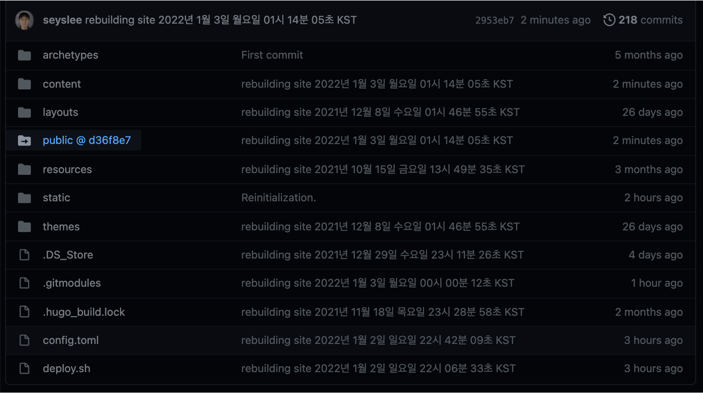

submodule 삭제 후 재등록
발단
submodule 레포지터리인 seyslee.github.io의 branch name을 master에서 main으로 변경하던 작업중 꼬여버려서 에러가 발생했다.
seyslee.github.io 레포지터리와 연결된 submodule인 public 디렉토리를 다시 등록할 필요가 있었다.
환경
- OS : macOS Monterey 12.1
- Git : git version 2.32.0 (Apple Git-132)
- 터미널 프로그램 : iTerm2 v3.4.15 (brew로 설치됨)
- Shell : zsh
해결방법
1. submodule 삭제
submodule 목록 확인
submodule을 완전삭제하기 전에 submodule 목록을 확인한다.
$ git submodule
-47b65cc887e6b6f4a00b439906aa669ade23ee8c public
9e911e331c90fcd56ae5d01ae5ecb2fa06ba55da themes/hugo-theme-codex (v1.6.0)
2개의 submodule 중에서 public 이라는 이름의 submodule을 삭제할 것이다.
submodule deinit
public이라는 이름의 submodule을 등록해제(Unregister)한다.
$ git submodule deinit -f public
명령어 옵션
-f(--force) : 명령어를 강제로 실행한다.-f옵션은 add, update, deinit 명령어에서만 사용 가능하다.
로컬에서 submodule 디렉토리 삭제
./git/modules/ 폴더 안의 모듈 디렉토리를 삭제한다.
$ rm -rf .git/modules/public
git에서 submodule 디렉토리 삭제
마지막으로 git에서 해당 실제 폴더를 삭제한다.
$ git rm -f public
submodule 목록 재확인
다시 submodule 목록을 확인해보자.
$ git submodule
9e911e331c90fcd56ae5d01ae5ecb2fa06ba55da themes/hugo-theme-codex (v1.6.0)
기존에 있던 public이라는 이름의 submodule이 삭제된 걸 확인할 수 있다.
2. submodule 등록
submodule 다시 추가
삭제한 submodule을 다시 등록하고 싶다면 아래 명령어를 입력한다.
명령어 형식
$ git submodule add -b <branch 이름> https://github.com/<Github 유저명>/<레포지터리 이름>.git <로컬에 생성할 디렉토리 이름>
실제 명령어
삭제한 submodule을 다시 로컬에 생성하고 submodule로 등록하는 과정이다.
Branch 이름과 레포지터리 이름, 연결할 디렉토리 명은 개개인의 환경마다 다르기 때문에 명령어를 잘 참고해서 변경해 쓰면 된다.
$ git submodule add -b main https://github.com/seyslee/seyslee.github.io.git public
Cloning into '/Users/ive/githubrepos/blog/public'...
remote: Enumerating objects: 3, done.
remote: Counting objects: 100% (3/3), done.
remote: Total 3 (delta 0), reused 0 (delta 0), pack-reused 0
Receiving objects: 100% (3/3), done.
마지막 라인에 출력된 Receiving objects: ..., done. 메세지가 출력된 걸 보면 문제없이 복제가 된 것 같다.
이제 실제 디렉토리를 받아왔는지 로컬에서 확인해보자.
submodule 추가 결과 확인
내 로컬 PC에서 블로그 작업경로를 확인한다.
$ pwd
/Users/ive/githubrepos/blog
$ ls -lh
total 16
drwxr-xr-x 3 ive staff 96B 7 30 20:00 archetypes
-rw-r--r-- 1 ive staff 2.5K 1 2 22:41 config.toml
drwxr-xr-x 6 ive staff 192B 12 7 23:45 content
-rwxrwxrwx@ 1 ive staff 585B 1 2 22:05 deploy.sh
drwxr-xr-x 5 ive staff 160B 12 8 00:39 layouts
drwxr-xr-x 16 ive staff 512B 1 3 00:01 public
drwxr-xr-x 4 ive staff 128B 8 1 14:43 resources
drwxr-xr-x 5 ive staff 160B 1 2 23:22 static
drwxr-xr-x 4 ive staff 128B 7 30 20:03 themes
public 디렉토리가 새로 생성되었다.
$ git submodule
ebfe49d9e92afef6bd11df4eb077439a8df18808 public (heads/main)
9e911e331c90fcd56ae5d01ae5ecb2fa06ba55da themes/hugo-theme-codex (v1.6.0)
seyslee.github.io 레포지터리에 연결된 public 디렉토리가 잘 복제(Clone)되었다!
branch 이름도 master가 아닌 main 으로 변경됐다.
Github에 로그인한 후 레포지터리에 들어가서 직접 확인해본 결과도 동일하다.

public 디렉토리에 파란색 링크가 걸려있다는 것은 submodule로 다른 Repository와 연결되어 있다는 걸 의미한다.
참고자료
[http://snowdeer.github.io/git/2018/08/01/how-to-remove-git-submodule/](Git Submodule 삭제 방법)
Git - git-submodule Documentation